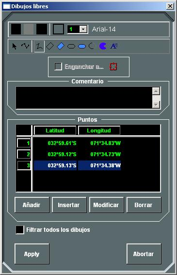
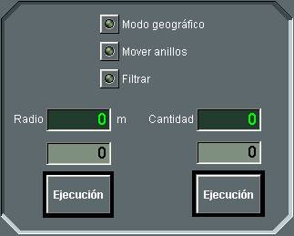
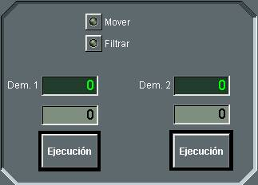
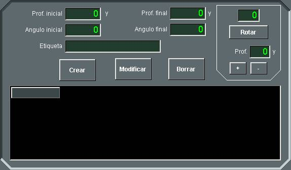
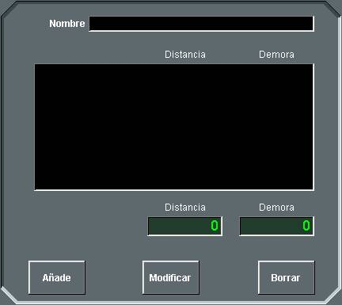
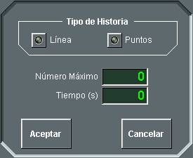
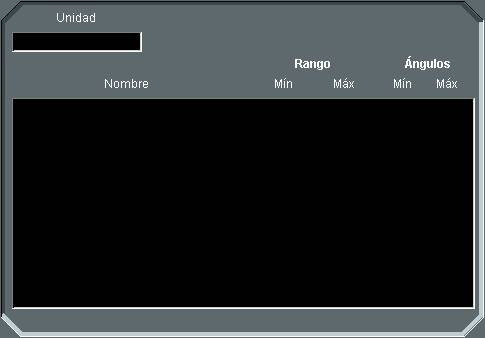
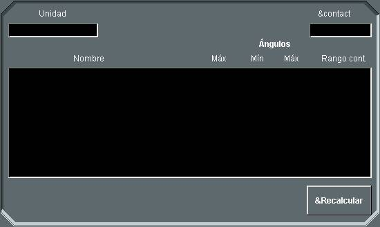
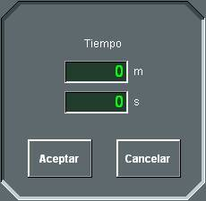
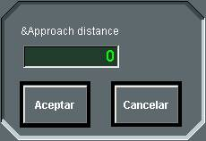

Menú Herramientas
Las opciones del menú Herramientas son:
- Dibujos Libres: Al seleccionar esta opción se abre la siguiente ventana de creación / edición de dibujos libres:
- Seleccionar colores de primer plano y de fondo. Al pulsar con el botón izquierdo del trackball sobre cada uno de los dos cuadrados que aparecen en la esquina superior izquierda de la ventana se abre una nueva ventana para selección de colores, donde puede elegirse el color por su nombre dentro de una lista o bien indicando la proporción de los colores básicos (Rojo, verde y azul) que lo conforman. Los colores seleccionados serán utilizados como colores de primer plano (color de línea) y de fondo en los dibujos libres que se realicen a partir de este momento.
- Seleccionar trama de relleno. Pulsando con el botón izquierdo del trackball sobre el cuadrado a la derecha de los de selección de colores, se despliega una lista con las diferentes tramas disponibles.
- Seleccionar el estilo de la línea. Pulsando con el botón izquierdo del trackball sobre el último cuadrado a la derecha que aparece en la parte superior de la ventana, se despliega una lista con los diferentes estilos de línea disponibles.
- Seleccionar la anchura de la línea: Pulsando con el botón izquierdo del trackball en el desplegable numérico que aparece en la parte superior de la ventana, se despliega una lista con las diferentes anchuras de línea disponibles, que van desde 0 (sin línea) hasta 7.
- Seleccionar el tipo de letra: Pulsando con el botón izquierdo del trackball en el desplegable alfanumérico que aparece en la parte superior de la ventana, se abre una ventana para la selección del tipo de letra. En esta ventana puede seleccionarse la fuente y sus características, como el tamaño, si es o no negrita, itálica o subrayado.
- Activar la selección de dibujos libres (elipses, arcos, sectores y texto). Pulsando con el botón izquierdo del trackball en el símbolo de cursor que aparece en la parte superior izquierda de la ventana, se activa el modo de selección de dibujos libres. En este modo, cuando se hace clic con el botón izquierdo del trackball sobre un dibujo libre, ésta queda seleccionada, pudiendo modificar entonces su posición (haciendo clic con el botón izquierdo del trackball en cualquier punto del interior del dibujo libre y arrastrando a la nueva posición), su altura y su anchura (haciendo clic con el botón izquierdo del trackball en las casillas del marco de la ayuda y arrastrando).
- Activar la selección de polilíneas. Pulsando con el botón izquierdo del trackball en el símbolo de polilínea que aparece en la parte superior izquierda de la ventana, se activa el modo de selección de polilíneas. En este modo, cuando se hace clic con el botón izquierdo del trackball sobre una ayuda gráfica de tipo polilínea, ésta queda seleccionada, pudiendo modificar entonces su lista de puntos, añadiendo nuevos puntos al final de la lista, insertando puntos en cualquier lugar de la lista, modificando puntos existentes o borrándolos.
- Activar la selección de polígonos. Pulsando con el botón izquierdo del trackball en el símbolo de polígono que aparece en la parte superior izquierda de la ventana, se activa el modo de selección de polígonos. En este modo, cuando se hace clic con el botón izquierdo del trackball sobre una ayuda gráfica de tipo polígono, ésta queda seleccionada, pudiendo modificar entonces su lista de puntos, añadiendo nuevos puntos al final de la lista, insertando puntos en cualquier lugar de la lista, modificando puntos existentes o borrándolos.
- Crear Polilíneas. Pulsando con el botón izquierdo del trackball en el símbolo de polílínea que aparece en la parte superior central de la ventana, se activa el modo de creación de polílíneas. En este modo, cada vez que se pulsa el botón izquierdo del trackball sobre un punto del escenario táctico, este punto se añade a la lista de puntos de la polílínea, hasta que se hace doble clic. En este modo también pueden editarse los puntos existentes, modificándolos o borrándolos así como insertar puntos en cualquier lugar de la lista.
- Crear Polígonos. Pulsando con el botón izquierdo del trackball en el símbolo de polígono (no relleno o relleno) que aparece en la parte superior central de la ventana, se activa el modo de creación de polígonos. En este modo, cada vez que se pulsa el botón izquierdo del trackball sobre un punto del escenario táctico, este punto se añade a la lista de puntos del polígono, hasta que se hace doble clic. En este modo también pueden editarse los puntos existentes, modificándolos o borrándolos así como insertar puntos en cualquier lugar de la lista.
- Crear Elipses. Pulsando con el botón izquierdo del trackball en el símbolo de elipse (no rellena o rellena) que aparece en la parte superior central de la ventana, se activa el modo de creación de elipses. En este modo, cada vez que se pulsa el botón izquierdo del trackball sobre un punto del escenario táctico, y se arrastra el cursor, se dibuja una elipse.
- Crear Arcos / Sectores circulares. Pulsando con el botón izquierdo del trackball en el símbolo de arco (no relleno o relleno) que aparece en la parte superior derecha de la ventana, se activa el modo de creación de arcos o sectores circulares. El proceso para dibujar un arco es el siguiente: primero se sitúa el cursor en un punto del escenario táctico, se hace clic con el botón izquierdo del trackball y se arrastra el cursor sin soltar el botón. Al soltarlo se crea un arco de un cuarto de la elipse inscrita en el rectángulo formado por los puntos inicial y final del arrastre. Ahora, haciendo clic con el botón izquierdo del trackball sobre los extremos de este arco se podrá alargar o encoger el arco y desplazarlo a lo largo de la elipse, respectivamente. Por último, al hacer doble clic con el botón izquierdo del trackball se da por concluido el proceso y el arco queda dibujado.
- Crear Textos. Pulsando con el botón izquierdo del trackball en el símbolo con la letra A que aparece en la parte superior derecha de la ventana, se activa el modo de creación de textos. En este modo, al pulsar el botón izquierdo del trackball sobre un punto del escenario táctico, se abre una ventana donde puede escribirse un texto, que queda insertado en dicho punto cuando se hace doble clic.
- Filtrar: Mientras esta opción esté seleccionada, los dibujos libres no se presentan en la pantalla.
- Enganchar: Al seleccionar esta opción mientras exista una ayuda gráfica tipo dibujo libre seleccionada y una traza en Hook, se enganchará la ayuda gráfica a dicha traza, manteniendo respecto a ella una demora y distancia constante e igual a la que tienen en el momento de realizar esta acción.
- Aplicar: Este botón sirve para aceptar los puntos de la lista ya sea para la creación o para la modificación de un polígono o polilínea.
- Abortar: Este botón sirve para cancelar todas las modificaciones que se han hecho en la lista de puntos.
- Para borrar un dibujo libre, se selecciona el dibujo en la pantalla y se pulsa la tecla “Supr” del teclado.
- Anillos de Distancia: Al seleccionar esta opción se abre la ventana de opciones de presentación de anillos de distancia.
- Configurar los anillos de distancia, introduciendo la Radio entre anillos (mayor de 0 y menor de 10.000 m) y el Cantidad de anillos (entre 1 y 10, ambos incluidos). Los límites son configurables en Galeon.ini.
- Seleccionar Modo Geográficos. Mientras esta opción esté seleccionada, los anillos de distancia se calculan geográficamente por lo que su representación gráfica no es exactamente un círculo sino una elipse aproximada por una polilínea que une los puntos situados a la distancia geográfica configurada y separados un grado. Si esta opción no está seleccionada, la representación gráfica de cada anillo de distancia sí será un círculo exacto, con un radio igual a la distancia gráfica, midiendo desde le centro hacia el norte, al punto situado a la distancia geográfica configurada.
- Seleccionar Mover Anillos: Mientras esta opción esté seleccionada, cada vez que se hace clic con el botón izquierdo del trackball sobre un punto de la presentación táctica, los anillos de distancia toman como centro dicho punto. En el caso de que exista una traza en este punto, se muestra un aviso al alumno permitiéndole elegir si quiere enganchar los anillos a la traza o no.
- Filtrar: Mientras esta opción esté seleccionada, los anillos de distancia no se presentan.
- Líneas de Marcación: Al seleccionar esta opción se abre la ventana de opciones de presentación de las líneas de marcación.
- Línea de Medición: Mientras esta opción esté seleccionada, cada vez que se hace clic con el botón izquierdo del trackball y se arrastra el cursor entre dos posiciones de la presentación táctica, se dibuja una línea uniendo dichos puntos con una etiqueta indicando la demora y distancia del segundo punto respecto al primero. Esta línea puede engancharse a trazas en cualquiera de sus extremos.
- Si ningún extremo está enganchado a trazas, la línea no se mueve.
- Si sólo el extremo inicial enganchado a una traza, la línea mantiene su distancia y demora, pero moviendo su origen con la traza, es decir, su extremo final no está anclado a la posición geográfica inicial.
- Si sólo el extremo final está enganchado a una traza, el origen se ancla a la posición geográfica inicial y el extremo final se mueve con la traza, por tanto, la distancia y demora de la línea va cambiando.
- Si ambos extremos están enganchados a trazas, la distancia y demora de la línea va cambiando con el movimiento de las trazas.
- Cortinas: Seleccionando esta opción se puede crear una cortina asociada a la traza en Hook. Si el Hook no está sobre una traza, los botones estarán desactivados. Cambiando el Hook de una traza a otra, los sectores de cortina de la traza en Hook son presentados en la ventana, permitiéndose su modificación.
- Marca Esclava: Seleccionando esta opción se pueden crear marcas esclavas asociadas a la traza en Hook. Si el Hook no está sobre una traza, los botones estarán desactivados. Cambiando el Hook de una traza a otra, son presentadas en la ventana las marcas esclavas de la traza en Hook, permitiéndose su modificación.
- Historia: Al seleccionar esta opción, si hay traza en Hook y esta traza no tiene activado la Historia, se abre la siguiente ventana de configuración los puntos de historia:
- Sectores: Desde esta opción se pueden seleccionar las siguientes opciones de presentación de sectores:
- Armas: Al seleccionar esta opción se abre una ventana donde aparece una lista de todas las armas que están instaladas en la unidad propia. Activando las casillas de verificación de las armas deseadas se representarán en la presentación táctica los sectores de alcance de dichas armas. Si este diálogo es abierto por el instructor con una unidad seleccionada con el Hook, se le mostrará los sectores de alcances de la unidad seleccionada.
- Sensores: Al seleccionar esta opción se abre una ventana donde aparece una lista de todos los sensores que están instaladas en la unidad propia. Activando las casillas de verificación de los sensores deseados se representarán en la presentación táctica los sectores de alcance y sectores interferidos (para radares) de dichos sensores. Si este diálogo es abierto por el instructor con una unidad seleccionada con el Hook, se le mostrará los sectores de alcances de la unidad seleccionada. Además, si tiene otra unidad seleccionada con la Marca, en la última columna se muestran los alcances de cada sensor calculados para la dicha unidad, es decir, teniendo en cuenta su tamaño visual, RCS, etc.
- Modo Automático: Mientras esta opción esté seleccionada se dibuja en pantalla el sector de alcance y / o interferido correspondiente al arma o sensor cuyo panel de detalle está siendo presentado en la pantalla de control.
- Zonas del Ejercicio: Desde esta opción se pueden seleccionar las siguientes opciones de presentación de zonas:
- Mostrar Todas: Cuando se selecciona esta opción, se seleccionan automáticamente todas las opciones para mostrar zonas que se incluyen en este menú. Al quitar la selección de esta opción, también se quita la selección de todas las demás opciones.
- Mostrar Zonas de Esfuerzo Pesquero: Mientras esta opción esté seleccionada se muestran en la Presentación Táctica las zonas de esfuerzo pesquero correspondientes según sea la consola de alumno o de instructor.
- Mostrar Zonas de Tráfico Mercante: Mientras esta opción esté seleccionada se muestran en la Presentación Táctica las zonas de tráfico mercante correspondientes según sea la consola de alumno o de instructor.
- Zonas Tácticas: Mientras esta opción esté seleccionada se muestran en la Presentación Táctica las zonas tácticas correspondientes según sea la consola de alumno o de instructor.
- Zonas Minadas: Mientras esta opción esté seleccionada se muestran en la Presentación Táctica las zonas minadas correspondientes según sea la consola de alumno o de instructor.
- Zonas Meteorológicas: Mientras esta opción esté seleccionada se muestran en la Presentación Táctica las zonas meteorológicas correspondientes según sea la consola de alumno o de instructor.
- Zonas PIM: Mientras esta opción esté seleccionada se muestran en la Presentación Táctica las zonas PIM correspondientes según sea la consola de alumno o de instructor.
- Aerovías: Mientras esta opción esté seleccionada se muestran en la Presentación Táctica las aerovías correspondientes según sea la consola de alumno o de instructor.
- Zonas ROE: Mientras esta opción esté seleccionada se muestran en la Presentación Táctica las zonas ROE correspondientes según sea la consola de alumno o de instructor.
- Zonas Zigzag: Mientras esta opción esté seleccionada se muestran en la Presentación Táctica las zonas zigzag correspondientes según sea la consola de alumno o de instructor.
- Modo Automático: Mientras esta opción esté seleccionada cuando el instructor edita una Zona Ambiental o Zona Minada se le muestra gráficamente de forma automática, independientemente de si ha activado alguna de las opciones anteriores.
- Cálculos: Desde esta opción se pueden solicitar los siguientes Cálculos:
- CPA: Al seleccionar esta opción cuando el Hook está enganchado a una traza y la Marca a otra, se calcula y representa gráficamente el CPA entre la traza en Hook y la traza en Marca.
- Posición Futura: Al seleccionar esta opción cuando el Hook está enganchado a una traza, se calcula y representa gráficamente la Posición Futura de la traza en Hook.
- Interceptación: Al seleccionar esta opción cuando el Hook está enganchado a una traza y la Marca a otra, se calcula y representa gráficamente la Interceptación de la traza en Marca a la traza en Hook.
- Acercamiento / Alejamiento: Al seleccionar esta opción cuando el Hook está enganchado a una traza y la Marca a otra, se calcula y representa gráficamente el rumbo recomendado de acercamiento / alejamiento a una distancia dada desde la traza en Marca a la traza en Hook.
- Cortina de Ocultación: Al seleccionar esta opción cuando el Hook está enganchado a una traza y la Marca a otra, se calcula y representa gráficamente la maniobra de ocultación por cortina de humo de la traza en Marca con respecto a la traza en Hook.
- Idioma: Desde esta opción se puede seleccionar el idioma empleado en la Consola, de entre los disponibles del sistema (al menos español e inglés).

Las operaciones que se pueden realizar en esta ventana son las siguientes:


Mediante este diálogo el operador podrá realizar las siguientes acciones:

Mediante este diálogo el operador podrá configurar las líneas de marcación, introduciendo los dos valores de Marcación. Cada vez que se hace clic con el botón izquierdo del trackball sobre un punto de la presentación táctica, las líneas de marcación toman como centro dicho punto. En el caso de que exista una traza en este punto, se muestra un aviso al alumno permitiéndole elegir si quiere enganchar los anillos a la traza o no.
El comportamiento de la línea es diferente según qué extremo tenga enganchado a una traza:
Estas líneas desaparecen automáticamente una vez pasado su tiempo de vida (configurable en Galeon.ini), aunque alguno de sus extremos esté enganchado a una traza.

Una cortina está compuesta por varios sectores, para cada uno de los cuales es necesario introducir los valores de Profundidad Inicial y Final (en yardas) y los valores de Angulo Inicial y Final (en grados). Opcionalmente se puede asociar una etiqueta al sector, que será mostrada gráficamente. Una vez introducidos estos valores, al pulsar el botón Crear se crea el sector y se presenta gráficamente. La ventana muestra la lista de sectores que componen la cortina asociada a la traza en Hook. Los sectores se pueden modificar seleccionándolos de la lista, editando sus valores y pulsando Modificar. También pueden ser eliminados de la cortina seleccionándolos en la lista y pulsando Borrar.
En el caso de que se desee rotar la cortina completa o aumentar / disminuir su profundidad una misma cantidad en todos los sectores se pueden usar los controles de rotación y profundidad que aparecen en la parte superior derecha de la ventana.

Una marca esclava asociada a una traza es un punto que se mueve con la traza manteniendo una demora y distancia fija a la misma. Para crearla, por tanto, el operador tiene que introducir los valores de Demora y Distancia de la marca esclava. La distancia debe estar en el rango de 0 a 20 Millas, y la demora de 0 a 360º (límites configurables en Galeon.ini). Al pulsar Crear, se crea la marca esclava, se presenta gráficamente, y se incluye en la lista de marcas esclavas que se muestra en la ventana. Las marcas esclavas se pueden modificar seleccionándolas en la lista, editando sus valores de demora y distancia, y pulsando Modificar. También pueden ser eliminadas seleccionándolas en la lista y pulsando Borrar.

Mediante este diálogo el operador podrá configurar los puntos de historia, introduciendo el tipo de representación gráfica (Puntos o Línea), el Número Máximo de puntos o tramos con la que se representa la historia, y el intervalo de Tiempo (en segundos) considerado entre puntos o tramos.
Si la traza en Hook ya tiene activados los Puntos de Historia, esta opción de menú aparecerá como marcada, y si se le pulsa se desactivará la Historia. Si no hay traza en Hook, se mostrará un mensaje de error al operador.


Según se trate de una consola de alumno o de instructor, las zonas definidas para el Ejercicio se muestran en la Presentación Táctica como se muestra en la siguiente tabla:
| Tipo de Zona | Consola de Alumno |
Consola de Instructor |
| Zonas de Esfuerzo Pesquero | Las del Bando propio (*) y las del bando neutral | Todas |
| Rutas de Tráfico Mercante | Las del Bando propio (*) y las del bando neutral | Todas |
| Zonas Tácticas | Las del Bando propio (*) | Todas |
| Zonas Minadas | Las del Bando propio (*) | Todas |
| Zonas Meteorológicas | Ninguna | Todas |
| Zonas PIM | Las del Bando propio (*) | Todas |
| Aerovías | Las del Bando propio (*) y las del bando neutral | Todas |
| Zonas ROE | Las del Bando propio (*) | Todas |
| Zonas Zigzag | Las del Bando propio (*) | Todas |
(*) Bando de la unidad que está siendo controlada por la Consola de Alumno en cada momento. Las zonas asignadas al bando neutral son presentadas en todas las Consolas, independientemente del bando de la unidad que controle.




